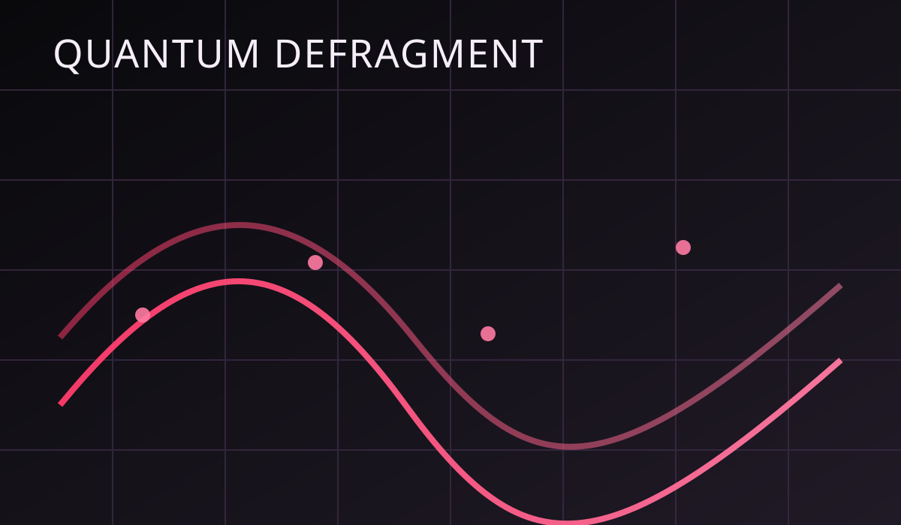
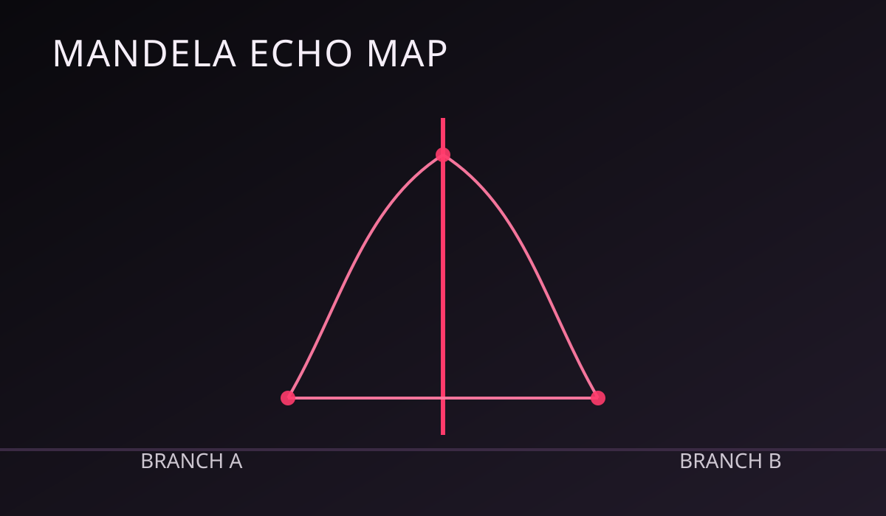
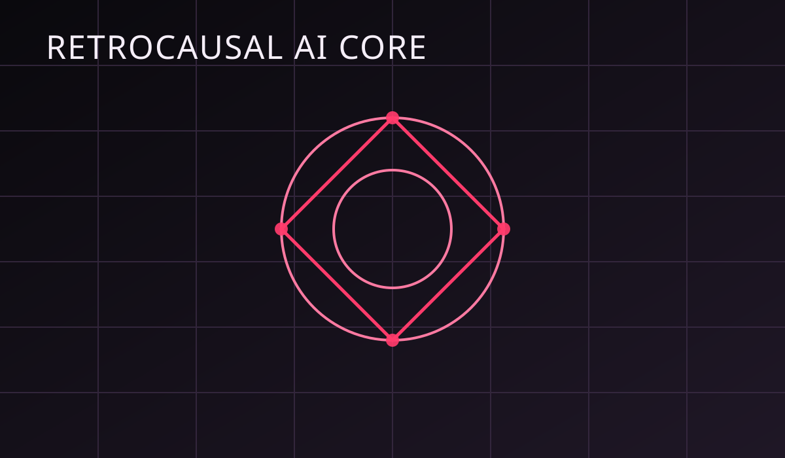

Ten major transmissions about time slips, machine conspiracies, alien signals, retrocausal systems,
and multiverse disturbances.
Quantum Defragment While Travelling Across Timelines
Author: Dr. Nira Quell | 6 min read
Deep-jump pilots report fragmented memory stacks after repeated timeline insertion. Our lab tested
"quantum defragment loops" that merge overlapping memory blocks from near-identical selves.
Results suggest cleaner recall and reduced paradox shock, but only when jumps remain within a
0.8 causal divergence range. Cross that, and identity drift accelerates.

Conspiracies on Time Travel and the First Time Machine
Author: V. Calder | 7 min read
Leaked procurement records indicate a classified "Chrono Transit Platform" active since 2012.
Public prototypes fail on purpose while black-budget versions run in isolated desert facilities.
The strongest clue is not what appears in the archive, but what disappears: entire policy drafts
replaced by cleaner versions with no origin signatures.
Alien Encounters and Sightings Near Temporal Fault Lines
Author: Reya Sato | 5 min read
Sightings cluster around electromagnetic dead-zones where digital clocks randomly shift by several
minutes. Witnesses describe triangular craft pausing mid-air before phasing with no sonic trace.
Hypothesis: these entities are not crossing distance, but crossing chronological layers.
Their appearances align with fault-line spikes seen in our gravimetric sensors.
Secret Techs Hidden by Governments: The Chrono Cloak Program
Author: Lena Ark | 6 min read
Internal memos from three countries reference synchronized tests of "temporal masking fabric,"
a field that prevents events from being recorded by normal observers and cameras.
This may explain contradictory footage from public incidents where crowds reported an event,
but sensor networks stored only static. If true, history can now be edited in real time.
Multiverse Effects: Mandela Echoes, Time Slips, and Memory Wars
Author: Ishan Dae | 8 min read
The Mandela Effect may be less about bad memory and more about timeline overlap windows.
During overlap, the brain caches both versions, then resolves to whichever branch stabilizes first.
Time slips are the lived form of this process: people walk through one city block and emerge in
a slightly different civic reality, complete with altered logos, names, and dates.

The Chrononaut Diary: Why Returned Travelers Forget Home
Author: Sel Ardan | 5 min read
In 34 documented return missions, travelers remembered mission objectives with precision but failed
to identify their own neighborhood maps. Psychologists call it "home-vector drift."
The diary logs suggest time travelers anchor to mission timeline metadata, not emotional continuity.
The farther the jump, the weaker their personal timeline lock becomes.
Paradox Market: Trading Tomorrow's News Today
Author: Mira Tenz | 7 min read
An encrypted market known as PX-11 allegedly sells "event futures," where verified headlines are traded
8 to 20 hours before they appear in public feeds.
Investigators suspect participants exploit micro-time loops to harvest near-future snapshots. If true,
global markets are already competing against information from unresolved timelines.
Lunar Relay Echo: Messages Arriving Before Transmission
Author: Kael Omari | 6 min read
A private moon relay station logged 41 packets with valid checksum signatures before the source systems
even initiated send operations. Engineers ruled out local clock faults and spoofing.
The leading theory is a reflected causal loop in deep-space infrastructure where high-latency links become
temporary retrocausal channels during solar magnetic compression.
Retrocausal AI: The Model That Trains on Future Outcomes
Author: A. Voss | 8 min read
A sealed research memo describes an AI that reduces prediction error by updating weights from
unresolved outcome data. In plain terms, it "learns" from events that have not happened yet.
Supporters call it statistical inevitability modeling. Critics call it timeline theft.
Either way, policy teams are already requesting access for risk forecasting.

Clocktower District Time Slip: 11 Missing Minutes in Public View
Author: Hana Veer | 5 min read
At 19:42 local time, pedestrians in Old Clocktower District reported silence, static light, and an
abrupt jump to 19:53. Security feeds from the same interval stored only noise frames.
When normal activity resumed, two storefront names had changed and one side-street no longer matched
municipal records. The district may have briefly intersected with a neighboring civic branch.